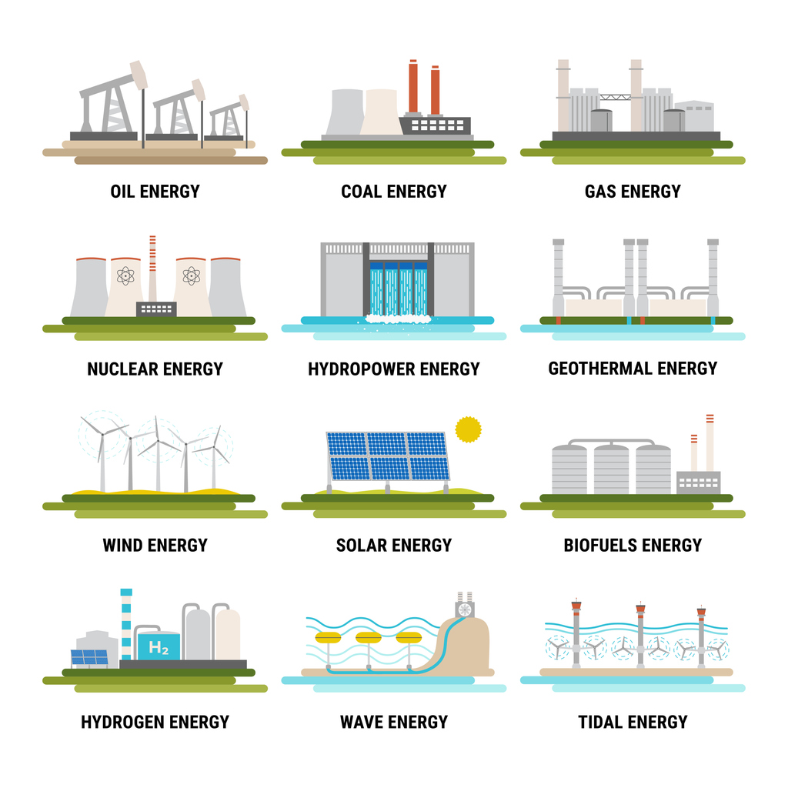

An energy audit is an in-depth assessment of all aspects of a building that affect all utility or on-site energy consumption. This includes electricity, natural gas, propane, generators, renewable energy, and so much more. This assessment includes an inspection of all the big players including HVAC equipment, water heaters, and pumps. More detailed audits will include analysis of the building envelope to determine the state of insulation and other building constructions. Those audits not only determine the efficiency of current equipment but also address other building factors that may lower that efficiency.
Energy audits also dive into the current utility rate structures to determine if there are any opportunities to find a lower rate or shift power demand to avoid peak charges. The end goal of the audit is to map where all energy is being spent, how to better manage this energy, and what can be done to lower a building’s energy consumption. For most buildings, proper maintenance and retro-commissioning efforts are the best bang for an owner’s buck. Ensuring equipment is operating as designed can yield surprising ROIs. Equipment upgrades to more efficient options can be a great decision when the improved operational expense outweighs the capital investment.
Cascade Building Solutions first ensures that all level 1, 2, and 3 commercial building energy audits adhere to ASHRAE standard 211. ASHRAE is the leading organization in building sciences and following their standards ensures our clients are receiving the highest quality reports. We begin with a review of all construction, commissioning, and utility bill documents. Before even stepping foot on site, we will be experts on the design and operation of your building. We create detailed plan for taking onsite measurements, inspecting equipment, surveying tenants, and reviewing controls. This ensures minimal time spent utilizing facilities and maintenance staff during the audit. The goals of the building owners are always the number one priority and audits can be adjusted to fit any needs.
Starting at an ASHRAE level 2 audit, Cascade includes building energy modeling as a standard. Utilizing the best energy modeling software in the industry, IES Virtual Environment, Cascade will perform a more detailed analysis than most competitors on the market. The building modeling analysis includes solar shading strategies, HVAC configuration and replacement options, controls strategies, solar panel feasibility, after hours setback analysis, and so much more. The methods used during this process are the same used by the nation’s top engineering firms when designing buildings and assessing life cycle costs.
Cascade’s on site audits include a wide variety of onsite measurements to guarantee all building recommendations are based on sound science. Infrared analysis of the building envelope and equipment identifies opportunities for repairs that can minimize cost and extend the life of assets. Runtime, temperature, humidity, and a variety of other monitors can shed light on the mysteries of building operations where owners do not have permanent sensors in place. Level 2 audits also include carbon dioxide measurements to ensure HVAC systems are turning over fresh air as designed. These audits don’t only help save energy, they provide a means for buildings to operate like they should and for tenants to achieve maximum comfort.
Currently even ASHRAE does not have an official process for performing an energy audit on manufacturing, agricultural, and industrial buildings. The burden lies on the building owner to hire an auditor with the proper background and knowledge to determine the best strategy for operations, maintenance, and upgrades. Cascade Building Solutions is in a unique position to offer these services to industrial clients across the state of Colorado. We are familiar with all things unfamiliar in buildings constructed for truly custom purposes. All Cascade industrial audits will begin with employee screenings to determine the manufacturing sensitivities, security, and operation challenges unique to your facility. We pride ourselves in only utilizing non-invasive methods to monitor process, HVAC, and electrical equipment so your bottom line remains undisturbed.
A standard industrial energy audit will map out your building’s energy output per unit of material produced. If owner’s desire to understand the impact of individual production equipment, Cascade can deploy it’s top of the line monitoring equipment to analyze energy expenditure over the proper period of time. We have developed custom technologies to monitor many types of production equipment while not impeding on a facilities production quotas.

Not sure how much energy is directly being utilized to produce a widget versus how much is needlessly heating your facility? Cascade has developed an industry leading standard analysis for measuring space heat gain. Using a combination of infrared analysis, heat flux sensors, and production information, we can map the exact energy impact of your process equipment.
Not sure where to begin? Cascade can create a standard quote for an ASHRAE level 1, 2, or 3 level audit. Have more specific goals or operation concerns in mind? Contact Cascade today for a custom quote that fits your needs!